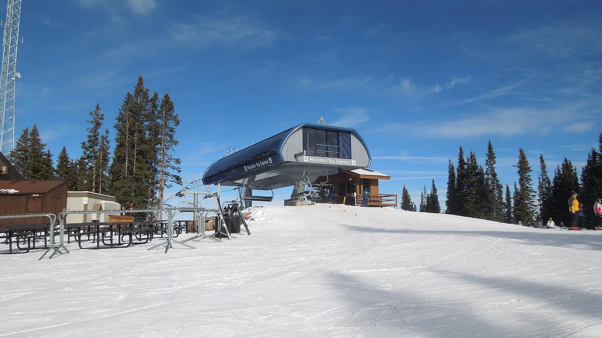

Vail, Colorado · Ski conditions
Vail Conditions and Webcams Today
Vail's webcams and kid facts: lessons from age 3, no childcare listed, free town buses, garage parking rates. It is about 90 miles, 1.75 hours, from Denver, the resort says.
Researched with AI (Miles Rowan) · sources linked and dated · How we check
Vail's own status
Vail's hours page says "Open For The Season!" with lifts 9am to 3:30pm daily. For lifts open today, check its terrain and lift status page (read Nov 17).
Our webcam read
No cam read from us yet. Cam reads show here only when a recent one has passed a separate automated accuracy check.

Plan the day with kids
- Season and hours: Vail's hours page says "Open For The Season!" for winter 2026/27, lifts 9am to 3:30pm daily. It posts no closing date. Vail Village and Lionshead ticket offices open 8am to 4pm.
- Childcare: Vail's arrival page says "We do not currently offer childcare services at Vail." That page also shows 2024 summer dates, so ask before you plan around a child under 3.
- Lessons: Ages 3 to 4: half day 9:30am to noon. Ages 3 to 6: full day 9:30am to 3pm. Ages 7 to 15: full day 9:30am to 3:30pm. Lunch with full-day kids groups only. Potty trained; helmet required.
- Lesson morning: Kids check in at Golden Peak or Lionshead (your email says which). Arrive 15 minutes early, 60 if picking up rentals. Every child needs a lift ticket or pass; lessons don't include one.
- Lift tickets: Vail's home page shows no ticket price and says buying 4 or more weeks ahead saves money. Its ticket page blocks our reader, so we show no ticket prices.
- Tubing and skating: Snow tubing (ages 4 and up, 90-minute sessions with gear) runs daily from mid-December to early April; outdoor rinks in Vail Village and Lionshead rent skates. No prices posted.
Parking prices on Vail's pages, read Nov 17:
- Vail Village or Lionshead garage, non-peak day: $10 an hour, up to $30
- Vail Village or Lionshead garage, peak day: $10 an hour, up to $50
Garage rates are as listed for winter on Vail's getting-here page, which says the winter rate dates are still "TBD" and doesn't say which days are peak. Entry after 3pm is free, and the town's Frontage Road and West Vail lots are free 7am to 11pm.
Lift tickets and lessons: Vail's pages we could read show parking rates but no lift ticket or lesson prices, so we can't sum a family-of-4 day; check live. See Vail lift tickets.
From Vail home page, Vail lessons: arrival and preparation, Vail arrival guide (Vail Basecamp), Vail ski and ride lessons: first timers, Vail getting here and parking and Vail hours of operation, read Nov 17.
Getting there from Denver
- Car: I-70 west to exit 176 for Vail Village and Lionshead. Vail lists Denver at 90 miles, 1.75 hours (other parts of the page say 97 or 100 miles), Denver's airport at 119 miles and Eagle County airport at 30 miles. It links to CoTrip for road conditions.
- Heading home on a weekend: Vail suggests leaving after 7pm on Saturdays and Sundays to miss eastbound traffic.
- Buses: Town of Vail buses are free all year. Most Core Transit routes are free too, including a Vail to Beaver Creek express every 20 minutes in winter; trips to Eagle County airport carry a small fare.
- Airport shuttle: Epic Mountain Express runs shared and private shuttles from Denver and Eagle County airports (970-754-7433).
If the snow is thin
- Lessons are not canceled for weather while the resort runs; cancel 48 hours or more ahead for a full refund. Inside 48 hours, a one-day lesson costs a 50% fee.
- Off the slopes: snow tubing from mid-December, ice skating in both villages, and snowshoeing at the Vail Nordic Center.
- We didn't find a weather refund policy for lift tickets on the pages we read; check before you buy.
From Vail ski and ride lessons: first timers and Vail activities besides skiing, read Nov 17.
Cam by cam
The 4 Vail cam views our reader uses, in our own descriptive words (see Vail's own cam page, as listed in our cam feed Nov 17): Summit snowmaking view, Summit ridge, High alpine ridge, Snow stake. Once our reads start, each cam's last read time shows here.
How we read the cams: a program looks at Vail's public webcam pictures and notes only what a picture can show: fresh snow, snow cover, snowmaking, moving lifts, how busy the base looks, visibility and the snow stake. Each read shows its time; after 90 minutes it is marked older, after 6 hours it is hidden. We never say whether terrain is safe, icy, groomed or open; Vail's own report decides that. We don't show the cam pictures or count people.
Sources: Vail mountain cams · Vail hours of operation · Vail ski and ride lessons: first timers · Vail getting here and parking · Vail home page · Vail lessons: arrival and preparation · Vail arrival guide (Vail Basecamp) (read Nov 17). We haven't skied Vail.